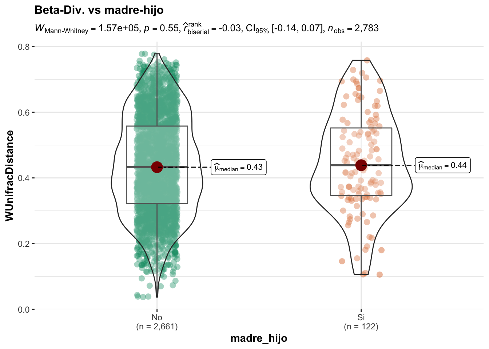

Análisis de la subpoblación de osos
Marc Noguera-Julian, PhD. TreeTopUnder
2022-04-30
Last updated: 2022-04-30
Checks: 6 1
Knit directory: UAB_LLops/
This reproducible R Markdown analysis was created with workflowr (version 1.7.0). The Checks tab describes the reproducibility checks that were applied when the results were created. The Past versions tab lists the development history.
The R Markdown is ignored by Git. To know which version of the R Markdown file created these results, you’ll want to first commit it to the Git repo. If you’re still working on the analysis, you can ignore this warning. When you’re finished, you can run wflow_publish to commit the R Markdown file and build the HTML.
Great job! The global environment was empty. Objects defined in the global environment can affect the analysis in your R Markdown file in unknown ways. For reproduciblity it’s best to always run the code in an empty environment.
The command set.seed(20220310) was run prior to running the code in the R Markdown file. Setting a seed ensures that any results that rely on randomness, e.g. subsampling or permutations, are reproducible.
Great job! Recording the operating system, R version, and package versions is critical for reproducibility.
Nice! There were no cached chunks for this analysis, so you can be confident that you successfully produced the results during this run.
Great job! Using relative paths to the files within your workflowr project makes it easier to run your code on other machines.
Great! You are using Git for version control. Tracking code development and connecting the code version to the results is critical for reproducibility.
The results in this page were generated with repository version 9ca78cd. See the Past versions tab to see a history of the changes made to the R Markdown and HTML files.
Note that you need to be careful to ensure that all relevant files for the analysis have been committed to Git prior to generating the results (you can use wflow_publish or wflow_git_commit). workflowr only checks the R Markdown file, but you know if there are other scripts or data files that it depends on. Below is the status of the Git repository when the results were generated:
Ignored files:
Ignored: .DS_Store
Ignored: .Rhistory
Ignored: .Rproj.user/
Ignored: analysis/.DS_Store
Ignored: analysis/01_index.Rmd
Ignored: analysis/02_Exploratory_v1.Rmd
Ignored: analysis/03_Osos_v1.Rmd
Ignored: analysis/04_about.Rmd
Ignored: analysis/Osos_vs_lobos_v1.Rmd
Ignored: analysis/_book/
Ignored: analysis/_main.Rmd
Ignored: analysis/figure/
Ignored: code/.DS_Store
Ignored: code/100_Report_v1.2.Rmd
Ignored: code/myFunctions.R
Ignored: data/.DS_Store
Ignored: data/processed/
Ignored: data/ps_silva.rds
Ignored: data/ps_silva_RR.rds
Ignored: data/raw/
Ignored: output/.DS_Store
Ignored: output/Deliverables/
Note that any generated files, e.g. HTML, png, CSS, etc., are not included in this status report because it is ok for generated content to have uncommitted changes.
These are the previous versions of the repository in which changes were made to the R Markdown (analysis/03_Osos_v1.Rmd) and HTML (docs/03_Osos_v1.html) files. If you’ve configured a remote Git repository (see ?wflow_git_remote), click on the hyperlinks in the table below to view the files as they were in that past version.
| File | Version | Author | Date | Message |
|---|---|---|---|---|
| html | 9ca78cd | Marc Noguera-Julian | 2022-04-30 | Final commit |
| html | 7913ffe | Marc Noguera-Julian | 2022-04-24 | final version |
Como objetivo principal del estudio procedemos a analizar las muestras fecales obtenidas de ejemplares de osos. En el conjunto de muestras encontramos varias muestras obtenidas de un mismo individuo asi como invididuos de los que se ha obtenido una sola muestra. Asi pués,aracterizaremos la beta-diversidad apareada entre muestra de un mismo individuo y la compararemos con la beta-diversidad de individuos diferentes En el conjunto de individuos muestreados, usaremos las variables Edad (Osezno, Subadulto y Adulto) y Sexo (Macho y Hembra) para detectar diferencias significativas a nivel de alfa-diversidad o de abundancia relativa en generos bacterianos.
Beta-Diversidad
Ordenacion
Usando el mismo método de anàlisis que en la sección previa, usamos la similitud entre la composición del microbioma fecal para realizar un análisi de ordenacion.
Deliverables: NMDS_StressPlot_osos.pdf, Ordination_OsoSamples.pdf
No se observa una agrupación ni por grupos de edad, region ni por sexo en el grupo de muestras de osos.

| Version | Author | Date |
|---|---|---|
| 7913ffe | Marc Noguera-Julian | 2022-04-24 |
PERMANOVA
Deliverables: Adonis_Oso.xls
Para testear estadísticamente la influencia de las variables secundarias (Edad, Sexo) en la estructura composicional del microbioma fecal usamos el test de ANOVA permutacional (vegan::adonis) sobre las muestras de Oso.
No se detecta una asociación entre el grupo de edad, el sexo o la region geografica y la composición del microbioma (p>0.05). Tampoco se detecta relación con el individuo asociado a la muestra, después de eliminar del dataset los individuos con una sola muestra.
[1] TRUE| term | df | SumOfSqs | R2 | statistic | p.value | |
|---|---|---|---|---|---|---|
| Sexo.1 | Sexo | 1 | 0.1942048 | 0.0208859 | 1.5785218 | 0.134 |
| Edad.1 | Edad | 2 | 0.1652095 | 0.0178969 | 0.6560285 | 0.788 |
| Region.1 | Region | 2 | 0.3497258 | 0.0376114 | 1.4264690 | 0.147 |
| Individuo.1 | Individuo | 18 | 2.0470145 | 0.3321253 | 0.9393196 | 0.611 |
Intra vs Inter
En este análisis pretendemos detectar si la variabilidad en la composición del microbioma entre especímenes del mismo individuo es significativamente diferente que la composición entre especímenes de diferentes individuos en la población de osos de la que se han recogido muestras. Con este objetivo, calculamos las distancias WUnifrac para cada par de muestras, y a cada valor de distancia lo etiquetamos como proveniente del mismo individuo (Intra) o de diferentes individuos (Inter) para despues comparar la distribución de estos valors y sus diferencias entre los grupos descritos.
Deliverables: BetaDiversity_intra.vs.inter_osos.pdf
No se observan diferencias estadísticamente significativas entre la variabilidad asociada a especimenes del mismo animal y especimenes de distintos animales en la población de osos. Asi pues la composición del microbioma intestinal de un mismo animal no es más ni menos estable que el de distintos animales. Este resultado es concordante con el resultado de la anova permutacional en relacion a la variable individuo y se puede explicar por la distancia temporal en el muestreo de un mismo animal o por efectos externos que pudieran modificar la composicion de las muestras.

Madre-Hijos
En este análisis se pretendre detectar si la similitud del microbioma intestinal entre animales que forman parte de un mismo nucleo familiar (el formado por una osa hembra y los oseznos a su cuidado) es mas elevada que la similitud entre individuos no conectados. Para definir que las dos muestras comparadas provienen de un “nucleo familiar”, requerimos:
- Las dos muestras son de individuos diferentes
- Los dos individuos tienen una relación de parentesco Madre-hijo
- Una de los individuos esta clasificado con Edad=“Osezno” en el momento de toma de muestra
- Las dos muestras se han tomado en el mismo año (variable Year).
Deliverables: BetaDiversity_madre_hijo_osos.pdf
No se observan diferencias en cuanto a la beta-diversidad comparando muestras de un mismo núcleo familiar o muestras de individuos independientes.

| Version | Author | Date |
|---|---|---|
| 9ca78cd | Marc Noguera-Julian | 2022-04-30 |
Análisis de las variables secundarias (Edad y Sexo).
En este análisis se responderá a las preguntas relacionadas con el cambio de la composición del microbioma (parametrizado con alfa diversidad o composición global) en relación a la edad de los individuos o al sexo de los mismos. Este análisis se realizara unicamente en la población de osos.
Comparativa en alfa-diversidad entre grupos de edad y sexo
Comparativa no paramétrica (Wilcoxon/Kruskal-Wallis) en diversidad alfa (Chao1,Shannon) entre grupos de edad, sexo y Region
Deliverables: AlphaDiversity_osos.pdf
No se observan diferencias en cuanto a alfa-diversidad en los diferentes de grupos de edad en la población de osos muestreada. No se observan diferencias en cuanto a alfa-diversidad entre machos y hembras en la población de osos muestreada. No se observan diferencias en cuanto a alfa-diversidad entre regiones geográficas en la población de osos muestreada.

Abundancia diferencial entre grupos de edad y sexo.
Comparativa (Wilcoxon) entre la abundancia de difernetes generos bacterianos entre grupos de edad y sexo y la valoración del effect size en la diferencia mediante el paquete lefser.
Deliverables: Lefse_vs_Edad.pdf, Lefse_vs_Sexo.pdf y boxplots independientes para cada género positivo al test
Se observan taxas diferencialmente abundantes entre grupos de edad (Adulto vs otros, Subadultos vs otros, Osezno vs Otros) mediante lefser(http://www.bioconductor.org/packages/release/bioc/html/lefser.html).La abundancia relativa diferencial detectada, se da en estos casos en generos poco abundantes y se debe a un subgrupo reducido de individuos donde estos géneros se pueden detectar.
Se observan taxas diferencialmente abundantes entre machos y hembras en la población de osos muestreada, mediante lefser(http://www.bioconductor.org/packages/release/bioc/html/lefser.html). La abundancia relativa diferencial detectada, se da en estos casos en generos poco abundantes y se debe a un subgrupo reducido de individuos donde estos géneros se pueden detectar.

| Version | Author | Date |
|---|---|---|
| 7913ffe | Marc Noguera-Julian | 2022-04-24 |
Abundancia diferencial entre Especies (Osos vs Lobos)
En este análisis adicional se pretende detectar los generos bacterianos que son diferencialmente abundantes entre Osos y Lobos, mediante el paquete lefser.
Deliverables: Lefse_vs_Especie.pdf yboxplots independientes para cada género positivo al test
Se observan taxas diferencialmente abundantes entre lobos y osos mediante lefser(http://www.bioconductor.org/packages/release/bioc/html/lefser.html). En particular, generos como Escherichia-Shigella y Streptococcus son muy abundantes en Osos mientras que su presencia en muestras de lobos es infrecuente. El cambio en la abundancia relativa de estos generos es, pués, estructural y consistente.

| Version | Author | Date |
|---|---|---|
| 7913ffe | Marc Noguera-Julian | 2022-04-24 |
Como ejemplo de géneros diferencialmente abundantes, se muestran las abundancias de dos de los géneros que mas diferencias presentan entre osos y lobos*. En el caso de los géneros Escherichia-shigella y Streptococcus se detecta un incremento consistente en el numero de reads asignados los dos géneros bacterianos(p<0.001 para los dos generos). 
| Version | Author | Date |
|---|---|---|
| 7913ffe | Marc Noguera-Julian | 2022-04-24 |
R version 4.1.1 (2021-08-10)
Platform: x86_64-apple-darwin17.0 (64-bit)
Running under: macOS Big Sur 10.16
Matrix products: default
BLAS: /Library/Frameworks/R.framework/Versions/4.1/Resources/lib/libRblas.0.dylib
LAPACK: /Library/Frameworks/R.framework/Versions/4.1/Resources/lib/libRlapack.dylib
locale:
[1] en_US.UTF-8/en_US.UTF-8/en_US.UTF-8/C/en_US.UTF-8/en_US.UTF-8
attached base packages:
[1] stats4 stats graphics grDevices utils datasets methods
[8] base
other attached packages:
[1] lefser_1.2.0 SummarizedExperiment_1.22.0
[3] Biobase_2.54.0 GenomicRanges_1.44.0
[5] GenomeInfoDb_1.30.1 IRanges_2.28.0
[7] S4Vectors_0.32.3 BiocGenerics_0.40.0
[9] MatrixGenerics_1.4.3 matrixStats_0.61.0
[11] xlsx_0.6.5 patchwork_1.1.1
[13] ggforce_0.3.3 ggplot2_3.3.5
[15] dplyr_1.0.8 phyloseq_1.38.0
loaded via a namespace (and not attached):
[1] backports_1.4.1 workflowr_1.7.0 plyr_1.8.6
[4] igraph_1.2.11 splines_4.1.1 gmp_0.6-4
[7] TH.data_1.1-0 kSamples_1.2-9 digest_0.6.29
[10] SuppDists_1.1-9.7 foreach_1.5.2 htmltools_0.5.2
[13] fansi_1.0.3 magrittr_2.0.3 memoise_2.0.1
[16] paletteer_1.4.0 cluster_2.1.2 Biostrings_2.62.0
[19] sandwich_3.0-1 colorspace_2.0-3 ggrepel_0.9.1
[22] xfun_0.30 libcoin_1.0-9 crayon_1.5.1
[25] RCurl_1.98-1.6 prismatic_1.1.0 jsonlite_1.8.0
[28] zeallot_0.1.0 zoo_1.8-10 survival_3.3-1
[31] iterators_1.0.14 ape_5.6-2 glue_1.6.2
[34] polyclip_1.10-0 gtable_0.3.0 zlibbioc_1.40.0
[37] XVector_0.34.0 DelayedArray_0.18.0 statsExpressions_1.3.0
[40] Rhdf5lib_1.16.0 Rmpfr_0.8-7 scales_1.2.0
[43] mvtnorm_1.1-3 DBI_1.1.2 PMCMRplus_1.9.3
[46] Rcpp_1.0.8.3 performance_0.8.0 datawizard_0.3.0
[49] RColorBrewer_1.1-3 modeltools_0.2-23 ellipsis_0.3.2
[52] pkgconfig_2.0.3 reshape_0.8.8 rJava_1.0-6
[55] farver_2.1.0 multcompView_0.1-8 sass_0.4.1
[58] utf8_1.2.2 here_1.0.1 tidyselect_1.1.2
[61] labeling_0.4.2 rlang_1.0.2 reshape2_1.4.4
[64] later_1.3.0 effectsize_0.6.0.1 munsell_0.5.0
[67] tools_4.1.1 cachem_1.0.6 cli_3.2.0
[70] generics_0.1.2 ade4_1.7-18 broom_0.8.0
[73] evaluate_0.15 biomformat_1.22.0 stringr_1.4.0
[76] fastmap_1.1.0 BWStest_0.2.2 yaml_2.3.5
[79] rematch2_2.1.2 knitr_1.37 fs_1.5.2
[82] purrr_0.3.4 coin_1.4-2 WRS2_1.1-3
[85] nlme_3.1-155 whisker_0.4 correlation_0.8.0
[88] compiler_4.1.1 rstudioapi_0.13 tibble_3.1.6
[91] tweenr_1.0.2 bslib_0.3.1 stringi_1.7.6
[94] highr_0.9 parameters_0.17.0 forcats_0.5.1
[97] lattice_0.20-45 Matrix_1.4-0 vegan_2.5-7
[100] permute_0.9-7 multtest_2.50.0 vctrs_0.4.1
[103] pillar_1.7.0 lifecycle_1.0.1 rhdf5filters_1.6.0
[106] mc2d_0.1-21 jquerylib_0.1.4 data.table_1.14.2
[109] bitops_1.0-7 insight_0.16.0 httpuv_1.6.5
[112] R6_2.5.1 promises_1.2.0.1 codetools_0.2-18
[115] boot_1.3-28 MASS_7.3-55 assertthat_0.2.1
[118] rhdf5_2.38.0 xlsxjars_0.6.1 rprojroot_2.0.2
[121] withr_2.5.0 multcomp_1.4-18 GenomeInfoDbData_1.2.7
[124] mgcv_1.8-39 bayestestR_0.11.5 parallel_4.1.1
[127] grid_4.1.1 tidyr_1.2.0 rmarkdown_2.13
[130] git2r_0.30.1 ggstatsplot_0.9.1